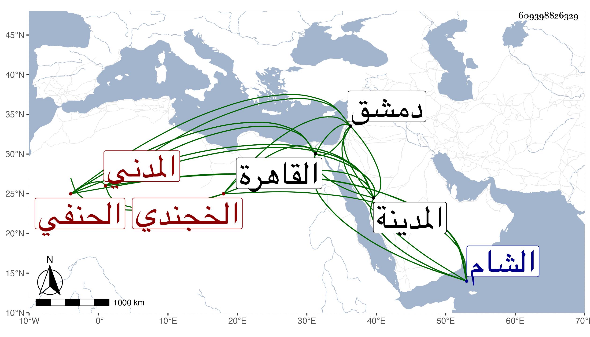

0902Sakhawi.DawLamic.ITO20230111-ara1.EIS1600.609398826329
Biography ID: 609398826329
203
أحمد بن محمد بن إبراهيم بن العلامة الجلال أحمد بن محمد بن محمد بن محمد الشهاب أبو المحاسن بن الشمس بن البرهان الخجندي المدني الحنفي الماضي جده . ولد في ليلة الأربعاء ثامن رمضان سنة ست وثلاثين وثمانمائة بالمدينة النبوية ونشأ بها فحفظ القرآن والكنز وعرض في سنة خمس وخمسين فما بعدها على غير واحد ببلده والقاهرة ودمشق منهم السيد علي لعجمي شيخ الباسطية وابن الديري والأمين والمحب الأقصرائيين وابن الهمام والزين قاسم والكافياجي والعز عبد السلام البغدادي الحنفيون والبلقيني والمحلي والعبادي والعلاء الشيرازي والسيد علي الفرضي الشافعيون والولوي السنباطي والقرافي المالكيان والعز الحنبلي وأجاز له من عدا المالكيين وابن الهمام والأمين واشتغل عليه وعلى العز والكافياجي والسيد المذكرين والشرواني وابن يونس وعثمان الطرابلسي ، وفضل بحيث درس وخلف أباه في إمامة الحنفية المستجدة بالمدينة وكان خيرا دينا فاضلا . مات بالقاهرة في يوم الثلاثاء ثاني عشري رمضان سنة إحدى وثمانين وكان قدم من الشام فقطن بصالحية قطيا ودفن بحوش سعيد السعداء بالقرب من البدر الحنبلي واستقر بعده في الإمامة أخوه إبراهيم الماضي .
